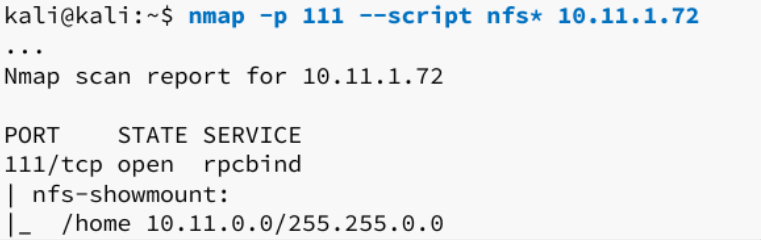

Network File System (NFS) is a distributed file system protocol similar to SMB. It allows a client to access files over a network as if they were locally-mounted storage. NFS is often used with UNIX operating systems.
NFS is predominantly insecure and it can be somewhat difficult to set up securely.
RPC is implemented using a service like rpcbind or portmapper. These services run on
TCP port 111.
nmap -v -p 111 [IP address]// verbose output on port 111
nmap -sV -p 111 --script=rpcinfo [IP address]// uses the nmap script "rpcinfo"
ls /usr/share/nmap/scripts | grep rpc// shows available rpc nmap scripts
nmap -p 111 --script=nfs* [IP address]// runs all nfs nmap scripts
Consider the following result of an nmap scan:

In this case, the whole /home directory is being shared and we can access it by mounting it on our
machine.
The mountd service is an RPC-based daemon that handles NFS mount requests from clients. When a client wants to mount an NFS share, it sends an RPC request to mountd on the server. First, the client uses Portmapper or RPCbind to find the port number where mountd is running. After receiving the correct port, the client sends an RPC request directly to mountd, asking to mount a specific directory. mountd then checks whether the client is allowed to mount the requested directory, and if authorized, it returns the necessary information (like file system details) for the mount operation to proceed. Essentially, mountd uses RPC to manage the mount process and ensure clients can access shared file systems securely.
mkdir nfsmount// creates a home directory to mount the NFS share to
sudo mount -o nolock [IP address]:/[share name] ./nfsmount// mount the share into the specified directory nfsmount in this case
-o nolock → disables file lockingsudo mount -o nolock 10.0.1.2:/home ./nfsmount// mounts the NFS share 10.0.1.2:/home to the directory nfsmount